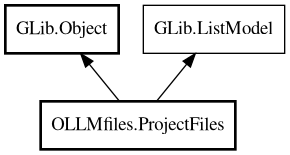

ProjectFiles
Object Hierarchy:

Description:
public class ProjectFiles :
Object,
ListModel,
Traversable<
ProjectFile>,
Iterable<
ProjectFile>
Manages project files with tree structure and hashmap.
Handles all async file I/O operations, directory scanning, and synchronization. Provides both hierarchical tree structure (for UI tree
views) and flat hashmap (for fast lookups by full path). Implements ListModel interface using Gee.ArrayList as backing store. Implements
Gee.Iterable for foreach iteration over items.
Content:
Properties:
Creation methods:
Methods:
- public bool @foreach (ForallFunc<ProjectFile> f)
Gee.Traversable interface implementation: Execute function for each
item.
- public void append (ProjectFile item)
Append an item to the list (ListStore-compatible).
- public bool contains (ProjectFile item)
Check if an item exists in the list.
- public bool find (ProjectFile item, out uint position)
Find an item in the list and return its position.
- public File? get_active_file ()
Get the active file from the project files list. FIXME - how do we
determin active files for a project since a file could be active in another project
- public File? get_by_id (int64 file_id)
Lookup File by file_id using index_of with a temporary ProjectFile.
- public ArrayList<string> get_ids (string language = "")
Gets a list of file IDs as strings, optionally filtered by language.
- public Object? get_item (uint position)
ListModel interface implementation: Get item at position.
- public Type get_item_type ()
ListModel interface implementation: Get the item type.
- public uint get_n_items ()
ListModel interface implementation: Get the number of items.
- public ArrayList<File> get_recent_list (int days)
Gets a list of recently modified open files, sorted by modification
time (most recent first). Files older than the specified number of days are ignored.
- public void insert (uint position, ProjectFile item)
Insert an item at a specific position.
- public Iterator<ProjectFile> iterator ()
Gee.Iterable interface implementation: Get iterator over items.
- public void remove (ProjectFile item)
Remove an item from the list by item reference.
- public void remove_all ()
Remove all items from the list (ListStore-compatible).
- public void remove_at (uint position)
Remove an item at a specific position (ListStore-compatible).
- public void update_from (Folder folder)
Recursively update project files from a folder tree.
Inherited Members:
All known members inherited from class GLib.Object
- @get
- @new
- @ref
- @set
- add_toggle_ref
- add_weak_pointer
- bind_property
- connect
- constructed
- disconnect
- dispose
- dup_data
- dup_qdata
- force_floating
- freeze_notify
- get_class
- get_data
- get_property
- get_qdata
- get_type
- getv
- interface_find_property
- interface_install_property
- interface_list_properties
- is_floating
- new_valist
- new_with_properties
- newv
- notify
- notify_property
- ref_count
- ref_sink
- remove_toggle_ref
- remove_weak_pointer
- replace_data
- replace_qdata
- set_data
- set_data_full
- set_property
- set_qdata
- set_qdata_full
- set_valist
- setv
- steal_data
- steal_qdata
- thaw_notify
- unref
- watch_closure
- weak_ref
- weak_unref
All known members inherited from interface GLib.ListModel
All known members inherited from interface Gee.Traversable
- @foreach
- all_match
- any_match
- chop
- element_type
- filter
- first_match
- flat_map
- fold
- map
- max
- min
- order_by
- scan
- stream
- tee
All known members inherited from interface Gee.Iterable